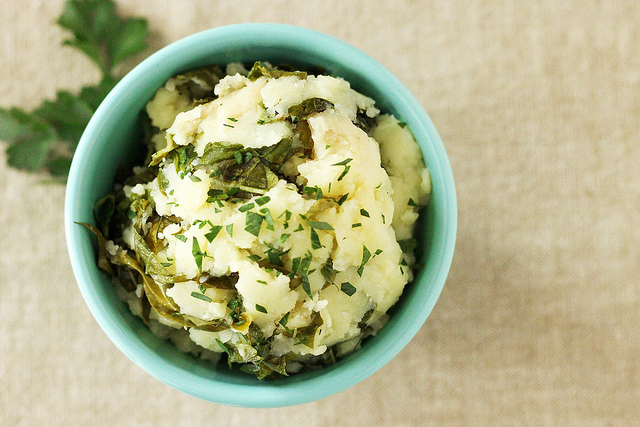

3 March 2016 Last updated 15:23
Russet potatoes are good for mashing
Culinary experts rule that Russet potatoes are the ideal potatoes for making the best mashed potatoes.
Which kind of butter to use?
The best potato mashers
Heavy cream or Milk?
What do mashed potatoes do to you
Toppings a "serious issue"
Death by green potato poisoning NEW
Person unknowningly consumes a huge number of green potatoes. Becomes first person in a decade to die via green potato poisoning.
Watch/Listen
Features & Analysis
Starchy topic?
Too much starch? Should the FDA step in?Eat other vegetables
They are supposedly good for youEmergency potatoes
Defenses against another potato famineLessons of potato
Influential potatoes in